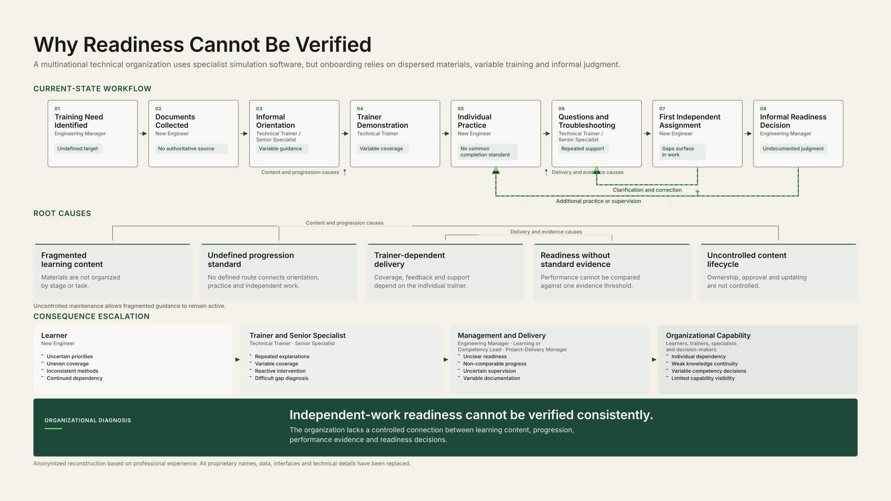
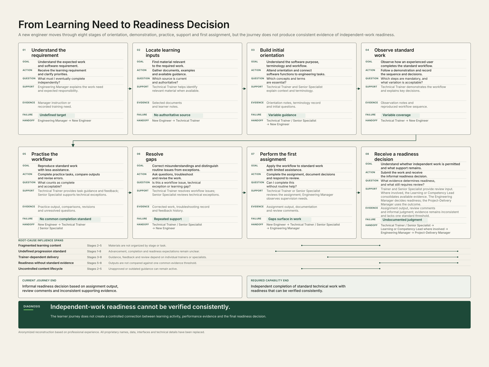
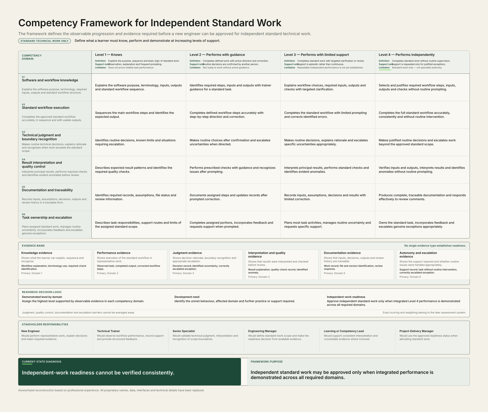
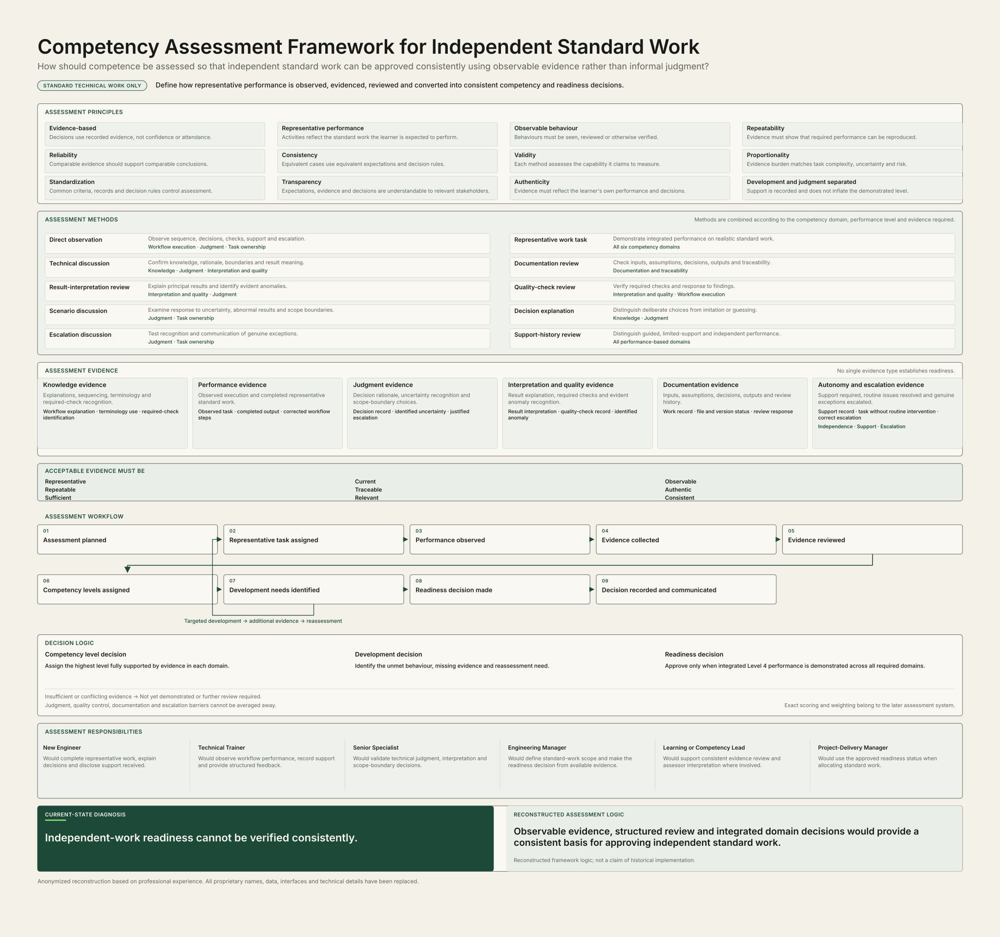
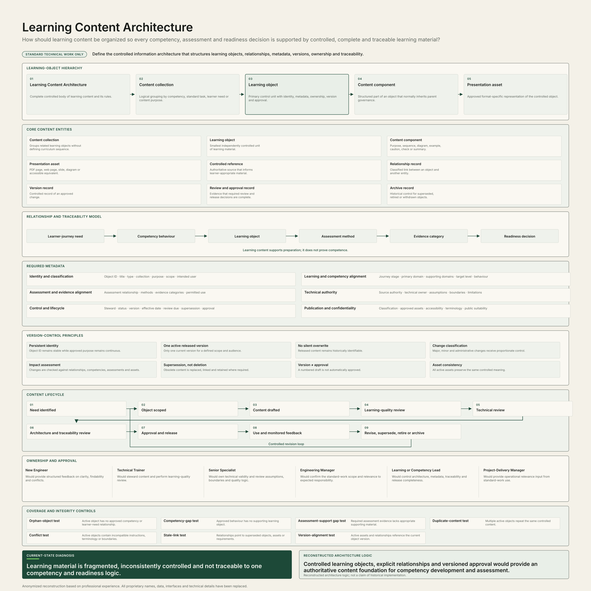

Learner
Uncertain priorities, uneven coverage, inconsistent methods and continued dependency.
Published portfolio case
From First Use to Independent Performance
Learning System Architecture connects problem diagnosis, learner journey, competency expectations, assessment evidence and controlled learning content into one reconstructed architecture for defined standard technical work.
Role: Portfolio author and learning-system designer. I reconstructed the scenario, system logic, artifacts and public communication from professional experience. The case does not represent a commissioned or paid engagement, deployed system or measured operational result.
The reconstructed context is a multinational technical organization using specialist simulation software. New engineers rely on dispersed materials, variable training and informal judgment, while no consistent pathway connects learning activity, performance evidence and readiness decisions.
Disclosure: Anonymized reconstruction based on professional experience. All proprietary names, data, interfaces and technical details have been replaced.
Problem diagnosis

Scope: Reconstructed diagnostic logic for independent standard technical work; not evidence of historical implementation.
Engineering Manager
The required responsibility is identified, but the target remains undefined.
New Engineer
Available materials are gathered without one authoritative source.
Technical Trainer / Senior Specialist
Initial guidance varies by trainer and available context.
Technical Trainer / Senior Specialist
Workflow coverage and decision explanation remain variable.
New Engineer
Practice occurs without one common completion standard.
Technical Trainer / Senior Specialist
Repeated support resolves gaps reactively.
New Engineer
Capability gaps may surface during standard work.
Engineering Manager
The decision relies on undocumented judgment and inconsistent evidence.
Uncertain priorities, uneven coverage, inconsistent methods and continued dependency.
Repeated explanations, variable coverage, reactive intervention and difficult gap diagnosis.
Unclear readiness, non-comparable progress, uncertain supervision and variable documentation.
Individual dependency, weak knowledge continuity, variable competency decisions and limited capability visibility.
Learner experience

Boundary: The journey describes reconstructed needs, support and evidence gaps. It does not claim that the pathway was deployed.
Clarify the expected work and eventual independent responsibility.
Evidence: Manager instruction or a recorded training need.
Gather relevant documents, examples and guidance.
Evidence: Selected documents and learner notes.
Connect software purpose, terminology and workflow to the work.
Evidence: Orientation notes, terminology record and initial questions.
Follow the standard workflow and record the sequence and decisions.
Evidence: Observation notes and a reproduced workflow sequence.
Complete practice tasks, compare outputs and revise errors.
Evidence: Practice output, comparisons, revisions and unresolved questions.
Distinguish routine workflow issues, technical exceptions and learning gaps.
Evidence: Corrected work, troubleshooting record and feedback history.
Apply the workflow to standard work with limited assistance.
Evidence: Assignment output, documentation and review comments.
Understand whether independent work is permitted and what support remains.
Evidence: Assignment output, review comments and an informal judgment without one standard threshold.
Informal readiness decision based on assignment output, review comments and inconsistent supporting evidence.
Independent completion of standard technical work with readiness that can be verified consistently.
Observable progression

Boundary: Independent performance applies only within defined standard technical work. It does not grant specialist authority or unrestricted approval authority.
Explains the purpose, terminology, sequence and basic decision logic of standard work.
Support condition: Explanation, observation and frequent prompting.
Completes defined parts of standard work with step-by-step direction and correction.
Support condition: Active instruction, correction and confirmation.
Completes standard work with limited prompting and requests support for specific uncertainties.
Support condition: Targeted clarification or review.
Completes standard technical work consistently, verifies outputs and escalates exceptions without routine supervision.
Support condition: No routine prompting; support only for justified exceptions or scope boundaries.
Knowledge, performance, judgment, interpretation and quality, documentation, and autonomy and escalation evidence work together. No single evidence type establishes readiness.
Independent standard work may be approved only when integrated Level 4 performance is demonstrated across all required domains. Judgment, quality control, documentation and escalation barriers cannot be averaged away.
Evidence and decisions

Boundary: The framework defines reconstructed assessment logic. Exact scoring and weighting belong to a later assessment system.
No single evidence type establishes readiness.
Reassessment loop: Targeted development → additional evidence → reassessment.
Assign the highest level fully supported by evidence in each domain, identify unmet behaviour and missing evidence, and approve readiness only when integrated Level 4 performance is demonstrated across all required domains.
Insufficient or conflicting evidence means not yet demonstrated or further review required.
Controlled content

Boundary: Learning content supports preparation; it does not prove competence.
Governance and scope boundaries
Independent work is limited to defined standard technical work.
Observable behaviour, representative performance and traceable records support decisions.
Defined roles, explicit decisions and versioned content establish governance logic.
The work is technology-neutral, organization-neutral and public-safe.
The case does not claim deployment, adoption or measured operational results.
Independent standard performance does not confer specialist or unrestricted approval authority.
Case-study conclusion
The principal portfolio value is the controlled line of reasoning that connects the business problem, learner experience, competency expectations, assessment evidence and learning content.
The case study is a public reconstruction, not an implementation claim. Its value lies in the coherence of the system and the transparency of its boundaries.
GitHub contact
Mushfig Yahya — STEM Curriculum & Content Specialist